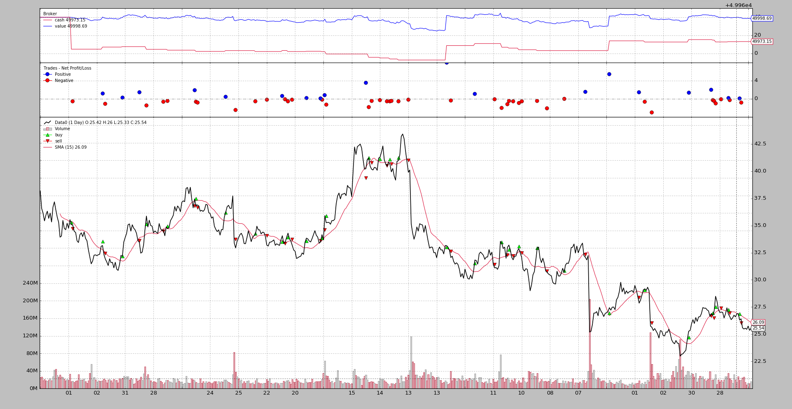

Sizers Smart Staking¶
Release 1.6.4.93 marks a major milestone in backtrader even if the change
in version numbering is a minor one.
Position Sizing is one of the things that actually set the foundation for this project after reading Trade Your Way To Financial Freedom from Van K. Tharp.
This is not the book in which Van K. Tharp details his approach to Position Sizing but the topic is presented and discussed in the book. One of the examples with regards to this had this setup
- If not in the market, toss a coin to decide whether to enter or not
- If already in the market, control the position with a Stop which is 2 x ATR and which gets updated if the price moves favorably to the taken position
The important parts about this:
- Entering the market is random
- The approach is tested with different Sizing schemes and this together with having a dynamic stop, makes the system profitable
And following the principles to set up your own “system” (wether manual/automated/computerized, technical/fundamental, ...) backtrader was born to one day test this scenario.
This could have been tested with any of the existing platforms, but there would have been no fun along the way and the many challenges solved, which were not even considered when kick-starting backtrader
Sizers were in the platform from the very beginning, but hidden because many other things including Live Trading started getting in the way. But this is now over and the Van K. Tharp scenario will be tested. Rather sooner than later.
In the meantime a couple of Sizers for a sample test.
Sizers to control positioning¶
The sample shows a potential use case in which Sizers alter the behavior of a strategy by controlling the sizing. Check the docs at backtrader.readthedocs.io to understand the sizing interface.
The 2 sizers:
LongOnly: will return a fixed size position if the current position is 0 and will return the same fixed size to close it if already in the market.class LongOnly(bt.Sizer): params = (('stake', 1),) def _getsizing(self, comminfo, cash, data, isbuy): if isbuy: return self.p.stake # Sell situation position = self.broker.getposition(data) if not position.size: return 0 # do not sell if nothing is open return self.p.stake
FixedReverser: will return a fixed size stake if not in the market and a doubled fixed size stake if already in the market to allow for a reversalclass FixedReverser(bt.Sizer): params = (('stake', 1),) def _getsizing(self, comminfo, cash, data, isbuy): position = self.broker.getposition(data) size = self.p.stake * (1 + (position.size != 0)) return size
These 2 Sizers will be combined with a very simple strategy.
class CloseSMA(bt.Strategy):
params = (('period', 15),)
def __init__(self):
sma = bt.indicators.SMA(self.data, period=self.p.period)
self.crossover = bt.indicators.CrossOver(self.data, sma)
def next(self):
if self.crossover > 0:
self.buy()
elif self.crossover < 0:
self.sell()
Notice how the strategy uses a Close-SMA crossover signal to issue buy and sell commands with an important thing to consider:
- No check of positioning is done in the strategy
The same strategy as seen in the executions below changes behavior from
long-only to long-short by simply changing the sizer with this code in
the sample (controlled with the switch --longonly)
if args.longonly:
cerebro.addsizer(LongOnly, stake=args.stake)
else:
cerebro.addsizer(FixedReverser, stake=args.stake)

Long-Short Execution¶
Done with the command:
$ ./sizertest.py --plot
And this output.
Which immediate shows:
- The number of trades has doubled
- The cash (except at the beginning) never equals the value because the strategy is always in the market
Sample Usage¶
$ ./sizertest.py --help
usage: sizertest.py [-h] [--data0 DATA0] [--fromdate FROMDATE]
[--todate TODATE] [--cash CASH] [--longonly]
[--stake STAKE] [--period PERIOD] [--plot [kwargs]]
Sample for sizer
optional arguments:
-h, --help show this help message and exit
--data0 DATA0 Data to be read in (default:
../../datas/yhoo-1996-2015.txt)
--fromdate FROMDATE Starting date in YYYY-MM-DD format (default:
2005-01-01)
--todate TODATE Ending date in YYYY-MM-DD format (default: 2006-12-31)
--cash CASH Cash to start with (default: 50000)
--longonly Use the LongOnly sizer (default: False)
--stake STAKE Stake to pass to the sizers (default: 1)
--period PERIOD Period for the Simple Moving Average (default: 15)
--plot [kwargs], -p [kwargs]
Plot the read data applying any kwargs passed For
example: --plot style="candle" (to plot candles)
(default: None)
The Full code¶
from __future__ import (absolute_import, division, print_function,
unicode_literals)
import argparse
import datetime
import random
import backtrader as bt
class CloseSMA(bt.Strategy):
params = (('period', 15),)
def __init__(self):
sma = bt.indicators.SMA(self.data, period=self.p.period)
self.crossover = bt.indicators.CrossOver(self.data, sma)
def next(self):
if self.crossover > 0:
self.buy()
elif self.crossover < 0:
self.sell()
class LongOnly(bt.Sizer):
params = (('stake', 1),)
def _getsizing(self, comminfo, cash, data, isbuy):
if isbuy:
return self.p.stake
# Sell situation
position = self.broker.getposition(data)
if not position.size:
return 0 # do not sell if nothing is open
return self.p.stake
class FixedReverser(bt.Sizer):
params = (('stake', 1),)
def _getsizing(self, comminfo, cash, data, isbuy):
position = self.broker.getposition(data)
size = self.p.stake * (1 + (position.size != 0))
return size
def runstrat(args=None):
args = parse_args(args)
cerebro = bt.Cerebro()
cerebro.broker.set_cash(args.cash)
dkwargs = dict()
if args.fromdate:
fromdate = datetime.datetime.strptime(args.fromdate, '%Y-%m-%d')
dkwargs['fromdate'] = fromdate
if args.todate:
todate = datetime.datetime.strptime(args.todate, '%Y-%m-%d')
dkwargs['todate'] = todate
data0 = bt.feeds.BacktraderCSVData(dataname=args.data0, **dkwargs)
cerebro.adddata(data0, name='Data0')
cerebro.addstrategy(CloseSMA, period=args.period)
if args.longonly:
cerebro.addsizer(LongOnly, stake=args.stake)
else:
cerebro.addsizer(FixedReverser, stake=args.stake)
cerebro.run()
if args.plot:
pkwargs = dict()
if args.plot is not True: # evals to True but is not True
pkwargs = eval('dict(' + args.plot + ')') # args were passed
cerebro.plot(**pkwargs)
def parse_args(pargs=None):
parser = argparse.ArgumentParser(
formatter_class=argparse.ArgumentDefaultsHelpFormatter,
description='Sample for sizer')
parser.add_argument('--data0', required=False,
default='../../datas/yhoo-1996-2015.txt',
help='Data to be read in')
parser.add_argument('--fromdate', required=False,
default='2005-01-01',
help='Starting date in YYYY-MM-DD format')
parser.add_argument('--todate', required=False,
default='2006-12-31',
help='Ending date in YYYY-MM-DD format')
parser.add_argument('--cash', required=False, action='store',
type=float, default=50000,
help=('Cash to start with'))
parser.add_argument('--longonly', required=False, action='store_true',
help=('Use the LongOnly sizer'))
parser.add_argument('--stake', required=False, action='store',
type=int, default=1,
help=('Stake to pass to the sizers'))
parser.add_argument('--period', required=False, action='store',
type=int, default=15,
help=('Period for the Simple Moving Average'))
# Plot options
parser.add_argument('--plot', '-p', nargs='?', required=False,
metavar='kwargs', const=True,
help=('Plot the read data applying any kwargs passed\n'
'\n'
'For example:\n'
'\n'
' --plot style="candle" (to plot candles)\n'))
if pargs is not None:
return parser.parse_args(pargs)
return parser.parse_args()
if __name__ == '__main__':
runstrat()


{kind=link}